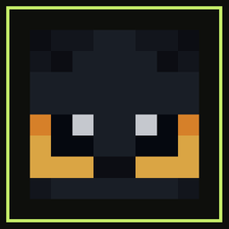
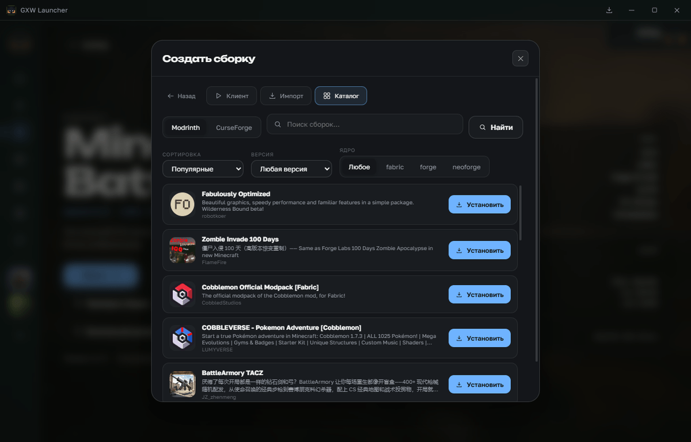

Сборки в пару кликов
Создай клиент, импортируй .mrpack, CurseForge или Prism — или выбери готовое из каталога.

GXW LAUNCHERСтавь сборки и моды прямо из лаунчера, настраивай карты, иконки и фон — без ручной возни с папками и файлами.

Не просто кнопка «Играть»: сборки, моды, карты и оформление живут в одном окне.
Создай клиент, импортируй .mrpack, CurseForge или Prism — или выбери готовое из каталога.
Modrinth и CurseForge: фильтры по версии и ядру, сортировка, страницы и понятные описания.
Лаунчер сам скачает зависимости, покажет прогресс и предложит обновления — вручную ничего искать не надо.
Миры из всех сборок: сложность, режим, читы, бэкапы и перенос между сборками в пару кликов.
Имя и иконка лаунчера, фон сборки — иконка, фото или градиент. 542 готовые иконки и редактор своих.
Апдейтер в один клик, проверка сборки и умная докачка. Обновился — и снова в игру.
Тёмный интерфейс, аккуратные модалки и никакого визуального шума.
Тактический PvP-сезон: захват зон, огнестрел TACZ, техника и дроны. Ставится из лаунчера или вручную — архивом.
Дельта-обновления и SHA-256 — в лаунчере, вручную не нужны.
Один файл GXW-Launcher-Setup.exe. Windows может спросить подтверждение — это нормально.
Лаунчер сам скачает Java и игру. Твои сборки появятся в левой панели.
Создай сборку или импортируй готовую. Дальше — только кнопки в лаунчере.
Можно войти через Microsoft или играть под оффлайн-ником. Лаунчер не продаёт игру и не обходит лицензию.
Да: .mrpack, CurseForge, Prism и экспорт GXW. Или собери клиент с нужным ядром и версией прямо в лаунчере.
Из каталога Modrinth и CurseForge. Лаунчер сам подтягивает зависимости и показывает прогресс загрузки.
Да: LAN, сохранённые серверы и Essential для приглашений. Свой хостинг-сервер — в планах.
Телеметрия выключена по умолчанию и включается только вручную. Миры и настройки остаются у тебя на диске.
Да, GPL-3.0. Исходники — на GitHub.